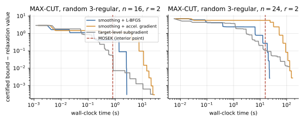
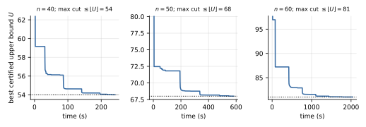
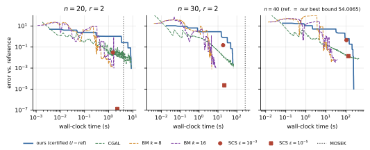

Introduction
Polynomial optimization — maximizing a polynomial over a basic semialgebraic set — is NP-hard, yet admits the convergent moment–SOS hierarchy of Lasserre [1] (see also [2][3][4]). Relaxation order $r$ yields an SDP whose moment matrix has size $\binom{n+r}{r}$ and which involves $\binom{n+2r}{2r}$ moment variables. The SDP is dense and highly structured, but general interior-point solvers exploit this structure poorly: their cost is governed by the number of moments $m\sim s^2$, not by the matrix size $s$, and they must store an $m\times m$ matrix. For MAX-CUT on $n=40$ nodes at order $r=2$, the moment matrix is only $821\times 821$ but $m=102{,}091$; the interior-point solver MOSEK was killed by the operating system during the optimizer phase on a 36 GiB machine.
So interior-point solvers run out of memory, not time, long before the hierarchy is exhausted. This article describes a first-order alternative with two properties that interior-point methods do not have:
- Anytime certificates. Every iterate yields a rigorous upper bound on the optimum. Stop whenever you like and you still hold a proof.
- $O(s^2)$ memory instead of $O(s^4)$: one eigen-decomposition per block and a sparse back-substitution.
We are equally explicit about what the method does not do: it is slower than interior-point on small problems, less accurate, and slower than uncertified first-order baselines. The question is what the certificate costs and what it buys.
Related work. Sparsity exploitation (correlative [5][6], term [7][8]) shrinks the blocks and is complementary to our approach. First-order and low-rank solvers for general SDPs include ADMM-type methods [9][10], sketching-based conditional gradient [11], and Burer–Monteiro factorizations [12], recently also tailored to moment–SOS relaxations [13][14]. The reduction of SDPs with a trace bound to the minimization of a largest eigenvalue is classical [15][16]; for the moment–SOS hierarchy it was exploited through the constant trace property by Mai, Lasserre, Magron and Wang [17][18], who solve the resulting eigenvalue problem with bundle methods. Dathathri et al. [19] introduced the diagonal-domination certificate for neural-network verification.
Contributions.
- A unified Gram-matrix dual with a certificate theorem. Inequalities, equalities, cliques and Boolean variables are handled uniformly, and every parameter value certifies an upper bound. Non-constant traces are handled by box bounds, with automatically computed localizing weights $B_i$.
- Exactness without a duality gap: the infimum of the certified bound is the value of the moment relaxation with valid trace cuts; for Boolean problems it equals the Lasserre value.
- Automatic assembly. The Gram matrices are the Hessian blocks of a formal Lagrangian; every oracle call costs one eigen-decomposition per block.
- Smoothing with complexity guarantees: a sandwich bound, a gradient with Lipschitz constant $O(1/\eta)$, and an $O(1/\varepsilon)$ iteration bound for accelerated gradient.
- A certification corollary: for integer-valued objectives the optimum is bounded by $\lfloor U\rfloor$; with a feasible point this proves optimality.
- A smoothing-free dual augmented-Lagrangian solver for problems with many constraint blocks.
- Honest experiments: agreement with MOSEK on 24 problem–order pairs, scaling up to order 3 and $n=60$, and a comparison with SCS, CGAL and Burer–Monteiro.
- Second-order relaxations of ReLU-network problems and the PyTorch package
polyopt.
Setting and Notation
We consider $$f^\star=\max_{x\in K} f(x),\qquad K=\{x\in\R^n:\ g_i(x)\ge0\ (i=1,\dots,p),\ h_j(x)=0\ (j=1,\dots,q)\}.$$ We assume the box $K\subseteq[-1,1]^n$ (no loss of generality after rescaling). In the Boolean case $K\subseteq\{\pm1\}^n$ and all computations are done modulo the ideal $\langle x_i^2-1\rangle$: monomials are squarefree and products are symmetric differences of supports.
Cliques. Let $I_1,\dots,I_N\subseteq[n]$ be index sets (a single clique $I_1=[n]$ is the dense case) such that every $g_i,h_j$ lies in some clique and every monomial of $f$ is a product of two monomials of one clique. For each clique $v_k$ is the vector of monomials in $x_{I_k}$ of degree $\le r$ and $s_k=|v_k|$. For an inequality $g_i$, $z_i$ is the vector of monomials of degree $\le r-\lceil\deg g_i/2\rceil$ and $s_i=|z_i|$. We require $\deg f\le2r$. Let $$B_i:=\sum_{\alpha:\,c_\alpha>0}c_\alpha+\sum_{\alpha:\,c_\alpha<0,\ \alpha\ \text{not even}}|c_\alpha|\ \ \ge \sup_{[-1,1]^n}g_i\qquad\text{for }g_i=\sum_\alpha c_\alpha x^\alpha .$$ This is a valid, automatable upper bound on $\sup g_i$ over the box, sharper than the usual $\sum_\alpha|c_\alpha|$; e.g. $B=1$ for $g=1-x^2$.
Moment relaxation. For a vector $y$ indexed by monomials, $L_y$ is the linear functional with $L_y(x^\gamma)=y_\gamma$; $M_k(y)=L_y(v_kv_k^\top)$ and $M_i^{\rm loc}(y)=L_y(g_iz_iz_i^\top)$ are the moment and localizing matrices. The order-$r$ Lasserre relaxation $\rho_r$ maximizes $L_y(f)$ subject to $y_0=1$, $M_k(y)\succeq0$, $M^{\rm loc}_i(y)\succeq0$ and $L_y(h_jx^\mu)=0$. Let $\rho_r^{\rm tr}$ be the same problem with the additional trace cuts $$\tr M_k(y)\le s_k,\qquad \tr M_i^{\rm loc}(y)\le s_iB_i,$$ which hold for every moment vector of a probability measure on $K$ because $|x^\alpha|\le1$ on the box and $0\le g_i\le B_i$ on $K$. Hence $f^\star\le\rho_r^{\rm tr}\le\rho_r$. In the Boolean case $M_k(y)_{aa}=y_0=1$, so $\tr M_k=s_k$ identically (“constant trace”) and the first cut is redundant.
Gram Certificates and the Spectral Dual
Definition (dual point). A dual point $\theta$ consists of a scalar $\sigma$, symmetric matrices $Q_{0,k}\in\Sym^{s_k}$, $Q_i\in\Sym^{s_i}$ — not required to be positive semidefinite — and polynomials $p_j$ such that, modulo the ideal in the Boolean case, $$\sigma-f \;=\; \sum_{k}v_k^\top Q_{0,k}v_k+\sum_{i}\big(z_i^\top Q_iz_i\big)g_i+\sum_jp_jh_j .$$
With $\Phi(Q)=\pos{-\lmin(Q)}$, define the spectral bound $$U(\theta)=\sigma+\sum_ks_k\,\Phi_k(Q_{0,k})+\sum_is_iB_i\,\pos{-\lmin(Q_i)},$$ where $\Phi_k(Q)=-\lmin(Q)$ (without the positive part) if clique $k$ is Boolean.
Theorem 1 (certificate). For every dual point $\theta$ and every $x\in K$, $f(x)\le U(\theta)$. Hence $f^\star\le U(\theta)$.
Proof. Fix $x\in K$ and $\lambda_k=\Phi_k(Q_{0,k})$. Then $Q_{0,k}+\lambda_kI\succeq0$, so $v_k^\top Q_{0,k}v_k\ge-\lambda_k\|v_k\|^2$. On the box $\|v_k(x)\|^2\le s_k$, and in the Boolean case it equals $s_k$ exactly, so $v_k^\top Q_{0,k}v_k\ge-\lambda_ks_k$ holds even if $\lambda_k<0$. For an inequality, put $\mu_i=\pos{-\lmin(Q_i)}$; since $g_i(x)\in[0,B_i]$ and $\|z_i\|^2\le s_i$, $(z_i^\top Q_iz_i)g_i\ge-\mu_is_iB_i$. Equality terms vanish on $K$. Evaluating the identity at $x$ gives $\sigma-f(x)\ge-\sum_ks_k\lambda_k-\sum_is_iB_i\mu_i$. $\square$
The dual point is free: no PSD constraint on any $Q$. The price of non-PSD is repaid by a multiple of the identity, whose size is the (smallest) eigenvalue violation — that is the whole spectral bound. Play with the simplest example: maximize $x$ subject to $1-x^2\ge0$ at order $1$. Here $v=(1,x)$, $z=1$, $B=1$, $s_0=2$, $s_1=1$, and matching coefficients gives $$Q_0=\begin{pmatrix}\sigma-q&-1/2\\-1/2&q\end{pmatrix},\qquad Q_1=(q),$$ with one free scalar $q$. At $q=\tfrac12$, $\sigma=1$ both matrices are PSD, no shift is needed, and $U=1=f^\star$.
Theorem 2 (exactness; no duality gap). Under the box assumption and $K\ne\emptyset$, $$\inf_\theta U(\theta)=\rho_r^{\rm tr},\qquad f^\star\le\rho_r^{\rm tr}\le\rho_r .$$ The primal problem $\rho_r^{\rm tr}$ attains its maximum. In the Boolean case $\rho_r^{\rm tr}=\rho_r$. If the trace cuts are inactive at some optimal solution of $\rho_r$, then $\rho_r^{\rm tr}=\rho_r$. If the quadratic module is Archimedean, $\rho_r^{\rm tr}\downarrow f^\star$ as $r\to\infty$ (for cliques, under running intersection [6]).
Proof idea. Write $\rho_r^{\rm tr}$ as a conic program, attach multipliers $\sigma$, $Q$'s and $t\ge0$ to $y_0=1$, the PSD blocks and the cuts, and eliminate $y$: the dual is $\min\sigma+\sum_k s_kt_k+\sum_is_iB_it_i$ subject to the coefficient identity and $Q+tI\succeq0$. For fixed $(\sigma,Q,p)$ the optimal $t$ is exactly the shift in $U$. The primal set is compact (the cuts bound the diagonals, $|y_{a+b}|\le\sqrt{y_{2a}y_{2b}}$ bounds the rest) and the dual strictly feasible, so conic duality [20] gives zero gap.
What the theorem says, and does not. $\inf_\theta U$ is not necessarily attained, and $\rho_r^{\rm tr}$ need not equal $\rho_r$ for non-Boolean problems; the cuts can only help. In all 24 problem–order pairs tested, they did not change the optimal value. The reformulation of trace-bounded SDPs as largest-eigenvalue minimization is classical [15][18]; what Theorems 1–2 add is that it applies to the whole sparse moment–SOS hierarchy, including localizing blocks and equalities, with box-derived weights instead of a constant-trace assumption. A weighted-domination variant (shifting by $tD$ for a positive diagonal $D$) is also valid but was not exploited in the experiments.
Formal Lagrangian and the Oracle
Free parametrization of the Gram freedom. Every polynomial $q$ supported on the products of basis monomials has a family of Gram matrices: the set of $(Q_{0,k})_k$ with $\sum_kv_k^\top Q_{0,k}v_k=q$ is an affine space $\{Q^{\rm sp}(q)+\Theta\}$, where $Q^{\rm sp}$ spreads each coefficient $q_\gamma$ evenly over the index pairs whose product is $x^\gamma$, and $\Theta$ ranges over zero-sum perturbations of each such group. Consequently every dual point is parametrized by $\theta=(\sigma,\Theta,u,p)$ with $u$ the entries of the localizing Gram matrices and $p$ the equality multipliers, and $\theta\mapsto(Q_{0,k},Q_i)$ is affine. Overlapping cliques share index-pair groups, which is how moment consistency across cliques (the sparse relaxation) enters.
Formal Lagrangian. Introduce pseudo-vectors $y^k\in\R^{s_k}$, $z^i\in\R^{s_i}$ and replace every monomial $x^{a+b}$ in the constraint identities by the product $y_ay_b$ (resp. $z_az_b$). The result is $$F(y,z;\theta)=\sigma-\sum_k y^{k\top}Q_{0,k}(\theta)y^k-\sum_iz^{i\top}Q_i(\theta)z^i,$$ so that $-\tfrac12\nabla^2_{y^k}F=Q_{0,k}(\theta)$: the Gram matrices are the Hessian blocks of the formal Lagrangian, and the hand-written Hankel, constant and localizing relations of the earlier version are not needed. Different factorization conventions for a moment $x^\gamma=x^ax^b$ only shift the base point and give the same set of dual points and the same $\inf U$. We checked the identity numerically: at random $\theta$ the residual at random points is $\le2\times10^{-15}$ for dense, sparse, Boolean, inequality- and equality-constrained instances.
Oracle cost. $U(\theta)=\sigma+\sum_bw_b\phi_b(\mathcal Q_b(\theta))$ is convex and piecewise smooth, with $w_b=s_k$ or $s_iB_i$. A subgradient is $e_\sigma-\sum_bw_b\mathcal Q_b'^{*}(v_bv_b^\top)$ over blocks with an active shift, $v_b$ being the smallest-eigenvalue eigenvector. One evaluation needs the smallest eigenpair of each block and a gather/scatter back-substitution. For blocks up to $s\approx2500$ a dense symmetric eigensolver is faster than Lanczos ($0.4$ s versus $1.7$ s at $s=1831$); memory per iteration is $O(s^2)$ for the block and $O(s^2)$ for the multipliers — against an interior-point Schur complement of dimension $m\sim s^2$ and storage $O(m^2)=O(s^4)$.
Smoothing, Complexity and Certification
Entropic smoothing. Because $\lmax$ is the maximum of a family of linear functions, Nesterov's smoothing [21][22] applies. For $\eta>0$ let $$\phi_\eta^{+}(Q)=\eta\log\big(1+\tr e^{-Q/\eta}\big),\qquad \phi_\eta^{0}(Q)=\eta\log\tr e^{-Q/\eta}$$ (smoothings of $\pos{-\lmin(Q)}$ and $-\lmin(Q)$) and $U_\eta=\sigma+\sum_bw_b\phi_{\eta,b}(\mathcal Q_b)$. Then:
- Sandwich: $U\le U_\eta\le U+\eta\sum_bw_b\log(s_b+\epsilon_b)$ — so $U_\eta$ is itself a valid upper bound.
- Gradient: $\nabla U_\eta=e_\sigma-\sum_bw_b\mathcal Q_b'^{*}(P_b)$ with the (sub-)density matrix $P_b=e^{-Q_b/\eta}/(\epsilon_b+\tr e^{-Q_b/\eta})$.
- Smoothness: $\nabla U_\eta$ is Lipschitz with constant $\ell/\eta$, from the strong convexity of the negative von Neumann entropy.
Theorem 3 ($O(1/\varepsilon)$ iteration bound). Let $W=\sum_bw_b$, $S=\max_b\log(s_b+1)$, $\eta=\varepsilon/(2WS)$. Accelerated gradient descent with backtracking [23] on $U_\eta$ from $\theta_0$ satisfies $U(\theta_k)\le U(\bar\theta)+\varepsilon$ for every comparison point $\bar\theta$ once $k+1\ge\frac{4R}{\varepsilon}\sqrt{\ell WS}$, with $R=\|\theta_0-\bar\theta\|$. Subgradient methods need $\Theta(1/\varepsilon^2)$ iterations in the worst case.
The bound is worst-case and needs the tiny $\eta=\varepsilon/(2WS)$. In practice the default solver runs L-BFGS on $U_\eta$ for a decreasing sequence $\eta\in\{10^{-1},3\cdot10^{-2},\dots,10^{-5}\}$ with warm starts (up to 500 iterations per stage) — no complexity guarantee, but faster. At every function evaluation the hard value $U(\theta)$ is computed from the same eigen-decomposition at no extra cost, so the best certified bound seen so far is always available.
Certification. If $f(K)\subseteq\mathbb Z$ (e.g. unweighted MAX-CUT), then $f^\star\le\lfloor U(\theta)\rfloor$ for every dual point; if a feasible $\hat x\in K$ has $f(\hat x)=\lfloor U(\theta)\rfloor$, then $\hat x$ is a global maximizer. This is how we turn a numerical bound into a proof of optimality. In floating point the certificate is exact up to the error of the dense symmetric eigensolver, many orders of magnitude below the margins in the experiments; we did not use interval arithmetic or a verified Cholesky factorization, which a fully rigorous certificate would add.
A smoothing-free alternative: the dual augmented Lagrangian. Smoothing has a structural weakness for problems with many constraint blocks: the bias bound is $\eta\sum_bw_b\log(s_b+1)$, the weights $w_b=s_bB_b$ are fixed by validity, and in the neural-network problems below $W$ is of order $10^3$ so $\eta\lesssim10^{-7}$ would be needed — extremely ill-conditioned. We therefore also solve the exact dual $$\min_{\theta,t}\ \sigma+\sum_bw_bt_b\quad\text{s.t.}\quad Q_b(\theta)+t_bI\succeq0,\ \ t_b\ge0$$ with an augmented Lagrangian on the PSD constraints (boundary-point / SDPNAL line [24][25][26]). Each inner problem is smooth and bound-constrained (L-BFGS-B), one inner iteration costs the same eigen-decomposition per block, the multipliers converge to optimal moment matrices, and the certified bound $U(\theta)$ is evaluated at every outer iterate, so the anytime property is retained. The penalty parameter matters a great deal: on one verification problem, $\rho_0=1,10$ gave no useful bound in 150 s, while $\rho_0=300,1000$ reached errors of $1.5\times10^{-6}$ and $4.8\times10^{-7}$. We chose $\rho_0=1000$ from this one instance; it is not guaranteed to transfer.
Experiments
Setup. Everything is implemented in Python (NumPy, SciPy) in the package msos, in a single process with 8 BLAS threads on a 14-core macOS machine with 36 GiB of RAM. The baseline is MOSEK 11.2 through CVXPY on a separately written moment-matrix model that shares no code with the dual construction; reported MOSEK times and memory include model construction. All MAX-CUT instances are unweighted random 3-regular graphs (networkx, seed 1, one instance per size). Timings were taken on a lightly loaded but not isolated machine, so they carry some noise.
Correctness (E1)
The first-order certified bound against the exact value of the moment relaxation computed by MOSEK, with and without the trace cuts, on 24 problem–order pairs: a ball, a disk, a sphere (equality constraint), MAX-CUT instances at $r=1,2,3$, box-constrained non-convex QPs, and a correlatively sparse chain problem.
| Problem | $r$ | $s$ | \#blocks | true opt. | MOSEK (Lasserre) | MOSEK (+ cuts) | first-order $U$ |
|---|---|---|---|---|---|---|---|
| ball | 2 | 3 | 2 | 1.0000 | 1.00000 | 1.00000 | 1.00000 |
| disk | 2 | 6 | 2 | 1.4142 | 1.41421 | 1.41421 | 1.41422 |
| sphere (eq.) | 2 | 6 | 1 | 1.4142 | 1.41421 | 1.41421 | 1.41421 |
| MAX-CUT K3 | 1 | 4 | 1 | 2.0000 | 2.25000 | 2.25000 | 2.25000 |
| MAX-CUT K3 | 2 | 7 | 1 | 2.0000 | 2.00000 | 2.00000 | 2.00000 |
| MAX-CUT K3 | 3 | 8 | 1 | 2.0000 | 2.00000 | 2.00000 | 2.00000 |
| MAX-CUT C5 | 1 | 6 | 1 | 4.0000 | 4.52254 | 4.52254 | 4.52255 |
| MAX-CUT C5 | 2 | 16 | 1 | 4.0000 | 4.00000 | 4.00000 | 4.00005 |
| MAX-CUT C5 | 3 | 26 | 1 | 4.0000 | 4.00000 | 4.00000 | 4.00003 |
| MAX-CUT K5 | 1 | 6 | 1 | 6.0000 | 6.25000 | 6.25000 | 6.25000 |
| MAX-CUT K5 | 2 | 16 | 1 | 6.0000 | 6.25000 | 6.25000 | 6.25002 |
| MAX-CUT K5 | 3 | 26 | 1 | 6.0000 | 6.00000 | 6.00000 | 6.00003 |
| MAX-CUT Petersen | 1 | 11 | 1 | 12.0000 | 12.50000 | 12.50000 | 12.50001 |
| MAX-CUT Petersen | 2 | 56 | 1 | 12.0000 | 12.00000 | 12.00000 | 12.00013 |
| MAX-CUT K7 | 1 | 8 | 1 | 12.0000 | 12.25000 | 12.25000 | 12.25000 |
| MAX-CUT K7 | 2 | 29 | 1 | 12.0000 | 12.25000 | 12.25000 | 12.25002 |
| MAX-CUT K7 | 3 | 64 | 1 | 12.0000 | 12.25000 | 12.25000 | 12.25010 |
| MAX-CUT reg3-12 | 1 | 13 | 1 | 16.0000 | 16.00000 | 16.00000 | 16.00000 |
| MAX-CUT reg3-12 | 2 | 79 | 1 | 16.0000 | 16.00000 | 16.00000 | 16.00010 |
| box QP n=5 (seed 1) | 2 | 21 | 6 | – | 8.61100 | 8.61100 | 8.61110 |
| box QP n=5 (seed 2) | 2 | 21 | 6 | – | 10.85204 | 10.85204 | 10.85215 |
| chain quartic n=8 (sparse) | 2 | 6 | 15 | – | 2.01404 | 2.01404 | 2.01419 |
| chain quartic n=8 (dense) | 2 | 45 | 9 | – | 2.01404 | 2.01404 | 2.01427 |
Certified first-order bound versus MOSEK. In every row the bound is $\ge$ the MOSEK value (as it must be) and the largest excess is $2.2\times10^{-4}$. The cuts never changed the optimal value, so “Lasserre” and “+ cuts” coincide. $s$ is the moment-block size.
All first-order bounds are valid upper bounds within $2.2\times10^{-4}$ of the interior-point value. The tabulated MAX-CUT values also display the known behaviour of the hierarchy: the order-1 value is the Goemans–Williamson/Shor bound [27] ($9/4$ on the triangle, $4.5225$ on $C_5$, $25/4$ on $K_5$); $K_5$ is closed only at $r=3$; and $K_7$ is still loose at $r=3$, in line with the fact that on complete graphs the hierarchy needs about $n/2$ levels [28].
Convergence of three solvers (E2)
We compare the target-level subgradient method of the earlier version, accelerated gradient with restarts (the scheme of Theorem 3), and L-BFGS on the smoothed objective — same oracle, same dual parametrization, same $\eta$-schedule, so the comparison isolates the solver.

| $n$ | gap | L-BFGS | accel. grad. | subgradient | MOSEK (total) |
|---|---|---|---|---|---|
| 16 | $10^{-1}$ | 1.39 | 7.57 | 0.57 | 0.8 |
| $10^{-2}$ | 2.58 | 14.59 | 0.83 | ||
| $10^{-3}$ | 2.65 | 21.13 | 10.57 | ||
| 24 | $10^{-1}$ | 18.65 | 91.35 | 18.97 | 15.7 |
| $10^{-2}$ | 21.98 | 130 | – | ||
| $10^{-3}$ | – | – | – |
Time (s) to reach a given gap above the exact relaxation value (“–”: not reached within budget).
Two observations, stated plainly. First, the plain subgradient method is not as bad as the earlier version claimed: with the Gram parametrization it reaches a gap of $10^{-2}$ in $0.8$ s at $n=16$, faster than L-BFGS, but it stalls at high accuracy ($10.6$ s for $10^{-3}$ versus $2.7$ s). Second, accelerated gradient, which has the best worst-case complexity, is the slowest in practice; L-BFGS exploits curvature far better. At $n=24$ no method reaches $10^{-3}$ within its budget, and MOSEK solves that size in $15.7$ s — faster than any first-order solver.
Scaling in time and memory (E3)
Order-2 MAX-CUT on random 3-regular graphs from $n=10$ ($s=56$) to $n=60$ ($s=1831$, $1.68$ million multipliers). Slide through the sizes:
| $n$ | $s$ | \#mult. | $U$ (ours) | time | mem. | MOSEK value | time | mem. | best cut | $\lfloor U\rfloor$ |
|---|---|---|---|---|---|---|---|---|---|---|
| 10 | 56 | 1,597 | 12.0002 | 0.5 s | 0.13 | 12.0000 | 0.1 s | 0.14 | 12 | 12 |
| 14 | 106 | 5,672 | 19.0000 | 1.7 s | 0.17 | 19.0000 | 0.4 s | 0.21 | 19 | 19 |
| 20 | 211 | 22,367 | 26.0010 | 8.7 s | 0.21 | 26.0000 | 3.9 s | 0.99 | 26 | 26 |
| 26 | 352 | 62,129 | 36.0000 | 26.3 s | 0.32 | 36.0000 | 43.0 s | 5.41 | 36 | 36 |
| 30 | 466 | 108,812 | 40.0026 | 61.6 s | 0.44 | 40.0000 | 252.6 s | 13.27 | 40 | 40 |
| 40 | 821 | 337,432 | 54.0065 | 241.1 s | 1.04 | killed (SIGKILL; Schur matrix $\gtrsim$39 GiB) | 54 | 54 | ||
| 50 | 1276 | 814,727 | 68.0040 | 582.7 s | 1.89 | not attempted | 68 | 68 | ||
| 60 | 1831 | 1,677,197 | 81.0195 | 2037.4 s | 2.49 | not attempted | 81 | 81 | ||
Order-2 MAX-CUT. “mem.” is peak memory in GiB. “Best cut” comes from 2000 restarts of single-flip local search; when it equals $\lfloor U\rfloor$ the cut is certified optimal. The MOSEK run at $n=40$ ($m=102{,}091$ constraints; Schur complement $\gtrsim39$ GiB even with symmetric storage, on a 36 GiB machine) was terminated by the operating system; we infer out-of-memory but have not confirmed it otherwise. MOSEK was not attempted for $n\ge50$.
- Time. MOSEK is faster for $n\le20$ ($3.9$ s versus $8.7$ s at $n=20$). The curves cross near $n=26$; at $n=30$ the first-order method needs $62$ s versus $253$ s.
- Memory. The first-order method grows from $0.13$ to $2.5$ GiB; MOSEK's grows from $0.14$ to $13.3$ GiB at $n=30$ (a factor 30 more) and cannot be run at $n=40$.
- Accuracy. First-order values exceed MOSEK's by at most $2.6\times10^{-3}$ ($n\le30$); for $n\ge40$ there is no interior-point reference.
- Certified optimality. At every size the local-search cut equals $\lfloor U\rfloor$, so the order-2 relaxation certifies that the best cut is the maximum cut on every graph up to $n=60$, with a margin between $U$ and the integer of $\le0.02$.
- Anytime. Every point on the curve below is a valid upper bound; at $n=40$ the bound drops below $55$ after about $120$ s and below $54.01$ after about $240$ s, so a user who stops early still holds a certificate.

An earlier attempt at $n=60$ with a Lanczos eigensolver for blocks above $1500$ did not converge within an hour and returned $87.2$ (at $s=1831$ a dense symmetric eigensolver is faster than ARPACK); the reported numbers use the dense solver up to $s=2500$.
Higher order (E4)
Order 3 gives a $1351\times1351$ ($n=20$) and $2325\times2325$ ($n=24$) block with $0.9$ and $2.7$ million multipliers, solved in $2.3$ and $3.8$ GiB. For $n=24$ the interior-point model would have $190{,}051$ constraints and a Schur complement of $\gtrsim134$ GiB; we did not try it.
| $n$ | $r$ | $s$ | \#mult. | $U$ (ours) | true opt. | time | mem. |
|---|---|---|---|---|---|---|---|
| 20 | 1 | 21 | 232 | 26.64409 | 26 | 0 s | 0.14 |
| 20 | 2 | 211 | 22,367 | 26.00096 | 26 | 9 s | 0.21 |
| 20 | 3 | 1351 | 913,277 | 26.00612 | 26 | 528 s | 2.25 |
| 24 | 2 | 301 | 45,452 | 32.00267 | 32 | 24 s | 0.49 |
| 24 | 3 | 2325 | 2,703,976 | 32.02266 | 32 | 2015 s | 3.79 |
Higher relaxation orders on random 3-regular MAX-CUT; “mem.” in GiB. The optimum is computed by exhaustive enumeration.
On these graphs the order-2 relaxation is already tight, so $r=3$ does not improve the bound; the experiment only shows that certified bounds at this order are reachable on a laptop-class machine, with a larger gap ($6\times10^{-3}$ and $2.3\times10^{-2}$ above the integer optimum) because the iteration budget is limited. MOSEK checks on $G(16,\tfrac12)$ and on $\pm1$-weighted complete graphs show order 2 is already exact there, so we make no claim that $r=3$ is needed in practice for MAX-CUT — only for structured graphs like complete graphs.
Sparsity and non-convex box QPs (E5)
A chain problem $\max\sum_i(a_ix_ix_{i+1}+b_ix_i^2x_{i+1}^2-0.3x_i^4)$ on the box with cliques $\{i,i+1\}$ (blocks of size $6$), solved with the sparse and the dense relaxation, and dense box QPs $\max x^\top Qx$, $x\in[-1,1]^n$.
| Problem | relaxation | max block | \#blocks | \#mult. | $U$ (ours) | time | MOSEK value | time |
|---|---|---|---|---|---|---|---|---|
| chain8 | sparse | 6 | 15 | 196 | 2.01419 | 0.5 s | 2.01404 | 0.1 s |
| chain8 | dense | 45 | 9 | 1,396 | 2.01427 | 1.2 s | 2.01404 | 0.6 s |
| chain12 | sparse | 6 | 23 | 304 | 2.37173 | 1.1 s | 2.37146 | 0.2 s |
| chain12 | dense | 91 | 13 | 5,279 | 2.37188 | 4.2 s | 2.37146 | 2.9 s |
| chain16 | sparse | 6 | 31 | 412 | 5.15506 | 1.3 s | 5.15472 | 0.2 s |
| chain16 | dense | 153 | 17 | 14,230 | 5.15527 | 13.3 s | 5.15472 | 12.6 s |
| chain20 | sparse | 6 | 39 | 520 | 7.97433 | 1.7 s | 7.97393 | 0.3 s |
| chain20 | dense | 231 | 21 | 31,417 | 7.97471 | 31.7 s | – | – |
| chain24 | sparse | 6 | 47 | 628 | 8.44369 | 1.8 s | 8.44318 | 0.4 s |
| chain24 | dense | 325 | 25 | 60,776 | 8.44432 | 68.5 s | – | – |
| boxqp6 | dense | 28 | 7 | 575 | 15.44530 | 0.3 s | 15.44526 | 0.2 s |
| boxqp8 | dense | 45 | 9 | 1,396 | 23.15104 | 0.7 s | 23.15096 | 0.6 s |
| boxqp10 | dense | 66 | 11 | 2,872 | 44.91237 | 1.7 s | 44.91235 | 1.3 s |
| boxqp12 | dense | 91 | 13 | 5,279 | 41.68393 | 2.8 s | 41.68391 | 2.7 s |
Correlative sparsity (chain, $r=2$) and dense non-convex box QPs.
Sparse and dense relaxations have the same value (to $5\times10^{-4}$), but the first-order method is $38\times$ faster on the sparse one at $n=24$ ($1.8$ s versus $68.5$ s). For these small blocks, MOSEK is faster than the first-order method in every row we ran.
Other first-order solvers (E6)
We also compared with SCS [9] (ADMM, same moment model), a dense conditional-gradient augmented-Lagrangian method (CGAL, [11] without the sketch) and a Burer–Monteiro augmented Lagrangian [12] ($k=8,16$) on order-2 MAX-CUT, $n=16,\dots,40$. The baselines' parameters were tuned per instance using the reference value, which favours them; ours was not. For CGAL, BM and SCS, “reaching accuracy $10^{-3}$” means value error and constraint violation both $\le10^{-3}$; ours is a certified upper bound minus the reference.

The outcome is unfavourable to our method in speed: at every size at least one non-certified baseline reaches $10^{-3}$ faster than we do, and Burer–Monteiro is the fastest (e.g. $n=30$: $4.7$ s for $k=8$ versus $62$ s for ours). All first-order methods beat MOSEK from $n\ge26$ in time and memory. What the baselines do not provide is a bound: they return primal values with constraint violation about $10^{-3}$, whereas every iterate of ours is a certified upper bound. The price of certification, in our experiments, is a factor $5$–$15$ in time at $n\ge20$. The full comparison:
| $n$ | method | $t_{10^{-1}}$ | $t_{10^{-2}}$ | $t_{10^{-3}}$ | final value | signed err. | max viol. | total time | mem. | |||||||||||||||||||||||||||||||||||||||||||||||||||||||||||||||||||||||||||||||||||||||||
|---|---|---|---|---|---|---|---|---|---|---|---|---|---|---|---|---|---|---|---|---|---|---|---|---|---|---|---|---|---|---|---|---|---|---|---|---|---|---|---|---|---|---|---|---|---|---|---|---|---|---|---|---|---|---|---|---|---|---|---|---|---|---|---|---|---|---|---|---|---|---|---|---|---|---|---|---|---|---|---|---|---|---|---|---|---|---|---|---|---|---|---|---|---|---|---|---|---|---|
| 16 | ours (certified $U$) | 1.6 s | 3.0 s | 3.0 s | 22.0003 | +3.1e-04 | $0$ | 3.1 s | 0.18 | |||||||||||||||||||||||||||||||||||||||||||||||||||||||||||||||||||||||||||||||||||||||||
| SCS $\epsilon{=}10^{-3}$ | 0.5 s | 0.5 s | n.r. | 21.9979 | -2.1e-03 | – | 0.5 s | 0.15 | ||||||||||||||||||||||||||||||||||||||||||||||||||||||||||||||||||||||||||||||||||||||||||
| SCS $\epsilon{=}10^{-5}$ | 0.6 s | 0.6 s | 0.6 s | 22.0000 | -3.3e-07 | – | 0.6 s | 0.15 | ||||||||||||||||||||||||||||||||||||||||||||||||||||||||||||||||||||||||||||||||||||||||||
| CGAL | 0.1 s | 0.2 s | 0.5 s | 22.0001 | +6.9e-05 | 8.4e-04 | 0.5 s | 0.13 | ||||||||||||||||||||||||||||||||||||||||||||||||||||||||||||||||||||||||||||||||||||||||||
| BM $k{=}8$ | 0.1 s | 0.1 s | 0.2 s | 22.0001 | +8.6e-05 | 9.9e-04 | 0.2 s | 0.13 | ||||||||||||||||||||||||||||||||||||||||||||||||||||||||||||||||||||||||||||||||||||||||||
| BM $k{=}16$ | 0.2 s | 0.2 s | 0.3 s | 21.9999 | -1.1e-04 | 7.9e-04 | 0.3 s | 0.14 | ||||||||||||||||||||||||||||||||||||||||||||||||||||||||||||||||||||||||||||||||||||||||||
| MOSEK (IPM) | (exact) | 22.0000 | – | – | 0.8 s | 0.31 | ||||||||||||||||||||||||||||||||||||||||||||||||||||||||||||||||||||||||||||||||||||||||||||
| 20 | ours (certified $U$) | 6.3 s | 8.3 s | 8.6 s | 26.0010 | +9.6e-04 | $0$ | 8.7 s | 0.21 | |||||||||||||||||||||||||||||||||||||||||||||||||||||||||||||||||||||||||||||||||||||||||
| SCS $\epsilon{=}10^{-3}$ | 1.5 s | n.r. | n.r. | 25.9696 | -3.0e-02 | – | 1.5 s | 0.18 | ||||||||||||||||||||||||||||||||||||||||||||||||||||||||||||||||||||||||||||||||||||||||||
| SCS $\epsilon{=}10^{-5}$ | 2.3 s | 2.3 s | 2.3 s | 26.0000 | -1.3e-07 | – | 2.3 s | 0.18 | ||||||||||||||||||||||||||||||||||||||||||||||||||||||||||||||||||||||||||||||||||||||||||
| CGAL | 0.6 s | 2.8 s | 8.5 s | 25.9995 | -5.5e-04 | 9.3e-04 | 8.5 s | 0.14 | ||||||||||||||||||||||||||||||||||||||||||||||||||||||||||||||||||||||||||||||||||||||||||
| BM $k{=}8$ | 0.3 s | 0.5 s | 1.4 s | 26.0001 | +1.3e-04 | 9.9e-04 | 1.4 s | 0.17 | ||||||||||||||||||||||||||||||||||||||||||||||||||||||||||||||||||||||||||||||||||||||||||
| BM $k{=}16$ | 0.4 s | 1.0 s | 1.6 s | 26.0009 | +8.7e-04 | 9.5e-04 | 1.6 s | 0.20 | ||||||||||||||||||||||||||||||||||||||||||||||||||||||||||||||||||||||||||||||||||||||||||
| MOSEK (IPM) | (exact) | 26.0000 | – | – | 4.1 s | 1.00 | ||||||||||||||||||||||||||||||||||||||||||||||||||||||||||||||||||||||||||||||||||||||||||||
| 26 | ours (certified $U$) | 17.2 s | 26.0 s | 26.2 s | 36.0000 | +3.2e-05 | $0$ | 26.3 s | 0.32 | |||||||||||||||||||||||||||||||||||||||||||||||||||||||||||||||||||||||||||||||||||||||||
| SCS $\epsilon{=}10^{-3}$ | 6.0 s | n.r. | n.r. | 35.9226 | -7.7e-02 | – | 6.0 s | 0.30 | ||||||||||||||||||||||||||||||||||||||||||||||||||||||||||||||||||||||||||||||||||||||||||
| SCS $\epsilon{=}10^{-5}$ | 9.5 s | 9.5 s | n.r. | 35.9982 | -1.8e-03 | – | 9.5 s | 0.28 | ||||||||||||||||||||||||||||||||||||||||||||||||||||||||||||||||||||||||||||||||||||||||||
| CGAL | 0.4 s | 1.7 s | 3.8 s | 36.0000 | -1.8e-06 | 9.9e-04 | 3.8 s | 0.17 | ||||||||||||||||||||||||||||||||||||||||||||||||||||||||||||||||||||||||||||||||||||||||||
| BM $k{=}8$ | 0.8 s | 1.9 s | 3.2 s | 35.9996 | -4.4e-04 | 7.8e-04 | 3.2 s | 0.26 | ||||||||||||||||||||||||||||||||||||||||||||||||||||||||||||||||||||||||||||||||||||||||||
| BM $k{=}16$ | 1.8 s | 2.2 s | 3.6 s | 35.9991 | -9.3e-04 | 7.8e-04 | 3.6 s | 0.34 | ||||||||||||||||||||||||||||||||||||||||||||||||||||||||||||||||||||||||||||||||||||||||||
| MOSEK (IPM) | (exact) | 36.0000 | – | – | 46.0 s | 4.89 | ||||||||||||||||||||||||||||||||||||||||||||||||||||||||||||||||||||||||||||||||||||||||||||
| 30 | ours (certified $U$) | 47.1 s | 59.4 s | n.r. | 40.0026 | +2.6e-03 | $0$ | 61.6 s | 0.44 | |||||||||||||||||||||||||||||||||||||||||||||||||||||||||||||||||||||||||||||||||||||||||
| SCS $\epsilon{=}10^{-3}$ | n.r. | n.r. | n.r. | 39.8497 | -1.5e-01 | – | 18.7 s | 0.38 | ||||||||||||||||||||||||||||||||||||||||||||||||||||||||||||||||||||||||||||||||||||||||||
| SCS $\epsilon{=}10^{-5}$ | 21.7 s | 21.7 s | 21.7 s | 40.0000 | +2.3e-05 | – | 21.7 s | 0.38 | ||||||||||||||||||||||||||||||||||||||||||||||||||||||||||||||||||||||||||||||||||||||||||
| CGAL | 6.0 s | 21.8 s | 65.5 s | 39.9991 | -9.3e-04 | 9.8e-04 | 65.5 s | 0.22 | ||||||||||||||||||||||||||||||||||||||||||||||||||||||||||||||||||||||||||||||||||||||||||
| BM $k{=}8$ | 2.9 s | 3.8 s | 4.7 s | 40.0003 | +2.7e-04 | 7.8e-04 | 4.7 s | 0.35 | ||||||||||||||||||||||||||||||||||||||||||||||||||||||||||||||||||||||||||||||||||||||||||
| BM $k{=}16$ | 2.0 s | 4.7 s | 7.9 s | 40.0008 | +8.5e-04 | 9.6e-04 | 7.9 s | 0.26 | ||||||||||||||||||||||||||||||||||||||||||||||||||||||||||||||||||||||||||||||||||||||||||
| MOSEK (IPM) | (exact) | 40.0000 | – | – | 278 s | 12.58 | ||||||||||||||||||||||||||||||||||||||||||||||||||||||||||||||||||||||||||||||||||||||||||||
| 40 | ours (certified $U$) | 196 s | 231 s | 231 s | 54.0065 | +0.0e+00 | $0$ | 241 s | 1.04 | |||||||||||||||||||||||||||||||||||||||||||||||||||||||||||||||||||||||||||||||||||||||||
| SCS $\epsilon{=}10^{-3}$ | n.r. | n.r. | n.r. | 53.5530 | -4.5e-01 | – | 104 s | 1.07 | ||||||||||||||||||||||||||||||||||||||||||||||||||||||||||||||||||||||||||||||||||||||||||
| SCS $\epsilon{=}10^{-5}$ | 129 s | n.r. | n.r. | 53.9928 | -1.4e-02 | – | 129 s | 1.13 | ||||||||||||||||||||||||||||||||||||||||||||||||||||||||||||||||||||||||||||||||||||||||||
| CGAL | 16.7 s | 177 s | n.r. | 53.9994 | -7.1e-03 | 9.4e-04 | 445 s | 0.42 | ||||||||||||||||||||||||||||||||||||||||||||||||||||||||||||||||||||||||||||||||||||||||||
| BM $k{=}8$ | 7.3 s | 17.7 s | n.r. | 54.0000 | -6.5e-03 | 9.8e-04 | 26.0 s | 0.45 | ||||||||||||||||||||||||||||||||||||||||||||||||||||||||||||||||||||||||||||||||||||||||||
| BM $k{=}16$ | 7.6 s | 20.3 s | n.r. | 54.0002 | -6.3e-03 | 1.0e-03 | 37.2 s | 0.50 | ||||||||||||||||||||||||||||||||||||||||||||||||||||||||||||||||||||||||||||||||||||||||||
Order-2 MAX-CUT, 3-regular graphs. $t_{10^{-k}}$: time to reach $|\text{value}-\text{ref}|\le10^{-k}$ (and, for CGAL/BM, violation $\le10^{-k}$); “n.r.”: not reached within 1200 s. “max viol.” is zero for ours (certified bound). At $n=40$ the reference is our own final value $54.0065$ (MOSEK is killed).
Application: Second-Order Relaxations for ReLU Networks
Semidefinite certification of neural networks is usually limited to a first-order (Shor-type) relaxation: the SDP of Raghunathan et al. [29] for robustness verification, whose first-order solution at scale is the topic of [19], and LipSDP [30] for Lipschitz constants. Polynomial formulations with higher-order relaxations exist [31][32] but are limited by the cost of the SDP solver. Can first-order solvers reach order 2 on such problems?
Polynomial encodings
Robustness verification. For a ReLU network $a_l=\max(W_la_{l-1}+b_l,0)$ and an $\ell_\infty$ ball around $x_0$, maximize $c^\top(W_La_{L-1}+b_L)$ with $c=e_{\rm wrong}-e_{\rm true}$; a negative maximum proves robustness. Interval bound propagation (IBP) gives a box; stable neurons are substituted away, and every unstable neuron becomes a variable $z$ with $z\ge0$, $z\ge\mathrm{pre}$, $z\,(z-\mathrm{pre})=0$ and the triangle inequality. The objective is linear and the constraints quadratic, so order 1 is the Shor-type SDP of the literature and order 2 is strictly stronger.
Lipschitz constants. For $f(x)=W_1\max(W_0x+b_0,0)$, every Jacobian is $W_1\operatorname{diag}(s)W_0$ with $s\in\{0,1\}^w$, hence $\mathrm{Lip}_2(f)^2\le L_{\rm pat}^2:=\max_{\|u\|\le1,\ s\in\{0,1\}^w}\|W_1\operatorname{diag}(s)W_0u\|^2$, with equality when all activation patterns are realized. With spins $t=2s-1$ this is a degree-4 POP in $(u,t)$ with a ball constraint and Boolean $t_j$ (mixed Boolean/continuous mode), so order 2 is the lowest order that makes sense. We compare with LipSDP-Neuron [30] and with $L_{\rm pat}^2$ computed by enumerating all $2^w$ patterns.
Results
Verification, small networks. Six small ReLU networks (two hidden layers, $d\in\{2,3,4\}$, widths $8$–$12$, trained on a synthetic task) were verified at a random point; the exact radius $\varepsilon^\star$ comes from a big-M MILP [33]. Order 2 recovers the exact radius in all cases (up to bisection resolution), whereas order 1 falls short in two of six: $0.229$ against $0.233$ and, strikingly, $0.171$ against $0.227$ ($75\%$) for the network with $d=4$. At $\varepsilon=0.97\varepsilon^\star$ the order-1 value for that network is $+7.04$ (robustness not certified) while the order-2 value is $-0.7212$, equal to the exact maximum. The ALM solver reproduces the interior-point values to $\le9\times10^{-6}$ in every case, in $4$–$62$ s; the smoothing solver is accurate only to $10^{-2}$–$10^{-1}$. The interior-point solver is faster at these sizes ($0.1$–$8$ s).
| certified radius $\varepsilon$ | bound on $\max(\ell_{\rm wrong}-\ell_{\rm true})$ at $\varepsilon=0.97 \varepsilon^\star$ | |||||||||||
|---|---|---|---|---|---|---|---|---|---|---|---|---|
| net $(d;\text{widths})$ | $n$ | unst. | IBP | order 1 | order 2 | exact | exact | order 1 (IPM) | order 2 (IPM) | order 1 (ALM) | order 2 (ALM) | order 2 (smooth.) |
| $2;8,8$ | 9 | 7 | 0.414 | 0.494 | 0.494 | 0.494 | -4.1391 | -3.8260 | -4.1391 | -3.8260 | -4.1391 | -4.1005 |
| $2;10,10$ | 6 | 4 | 0.039 | 0.097 | 0.096 | 0.097 | -0.4694 | -0.4694 | -0.4694 | -0.4694 | -0.4694 | -0.4691 |
| $3;8,8$ | 6 | 3 | 0.010 | 0.079 | 0.078 | 0.079 | -0.0531 | -0.0531 | -0.0531 | -0.0531 | -0.0531 | -0.0522 |
| $3;10,10$ | 13 | 10 | 0.042 | 0.229 | 0.232 | 0.233 | -0.7868 | -0.3217 | -0.7868 | -0.3217 | -0.7868 | -0.7057 |
| $4;8,8$ | 14 | 10 | 0.026 | 0.171 | 0.227 | 0.227 | -0.7212 | 7.0408 | -0.7212 | 7.0408 | -0.7212 | -0.6447 |
| $2;12,12$ | 10 | 8 | 0.058 | 0.135 | 0.135 | 0.135 | -0.4430 | -0.4430 | -0.4430 | -0.4430 | -0.4430 | -0.4305 |
Robustness verification of small networks ($n$ variables after eliminating stable neurons, “unst.” unstable neurons). Radii: largest $\varepsilon$ with a negative bound. Right block: bound on the maximal margin violation at $\varepsilon=0.97\varepsilon^\star$ (negative = robust). IPM: interior point (MOSEK); ALM: our dual augmented Lagrangian; smooth.: smoothing + L-BFGS.
Lipschitz constants. In eight networks ($w=8$–$14$, $d=3$–$5$) LipSDP-Neuron overestimates $L_{\rm pat}^2$ by $0.8\%$–$7.0\%$ (e.g. $1.8236$ against $1.8044$). The order-2 relaxation solved by ALM matches the enumerated value to five digits in all eight cases ($13$–$136$ s), including the two with $n=18,19$ where we did not run the interior-point model. Order 3 gives the same value at a much higher cost and is not needed. Two caveats: $L_{\rm pat}^2$ bounds the true Lipschitz constant only from above, and LipSDP is already within $7\%$ of it, so the possible improvement is small.
| network | $n$ | exact $L^2_{\rm pat}$ | LipSDP | order 2 (IPM) | order 2 (ALM) | time | order 3 (ALM) | time |
|---|---|---|---|---|---|---|---|---|
| rand $d{=}3,w{=}8$ | 11 | 1.80438 | 1.82360 | 1.80438 | 1.80438 | 17 s | 1.80438 | 249 s |
| rand $d{=}3,w{=}8$ | 11 | 2.49374 | 2.52125 | 2.49374 | 2.49374 | 16 s | 2.49374 | 229 s |
| rand $d{=}3,w{=}8$ | 11 | 2.71092 | 2.85274 | 2.71092 | 2.71092 | 13 s | 2.71092 | 185 s |
| corr $d{=}3,w{=}10$ | 13 | 4.17584 | 4.28999 | 4.17584 | 4.17584 | 23 s | 4.17584 | 581 s |
| corr $d{=}4,w{=}10$ | 14 | 1.60557 | 1.70239 | 1.60557 | 1.60557 | 52 s | 1.60557 | 906 s |
| corr $d{=}4,w{=}12$ | 16 | 2.13059 | 2.14801 | 2.13059 | 2.13059 | 61 s | – | – |
| corr $d{=}4,w{=}14$ | 18 | 3.15013 | 3.32849 | – | 3.15013 | 97 s | – | – |
| corr $d{=}5,w{=}14$ | 19 | 1.43330 | 1.53375 | – | 1.43330 | 136 s | – | – |
Squared $\ell_2$ Lipschitz bound of one-hidden-layer ReLU networks: pattern maximum by enumeration, LipSDP-Neuron, and order-2/3 relaxations.
Larger networks. Two-hidden-layer networks with $40$–$48$ neurons per layer and $\varepsilon$ chosen so that $32$–$55$ neurons are unstable ($n=38$–$60$). The dense order-2 relaxation would need $\ge47$ GiB of Schur complement; with correlative sparsity the $n=40$ instance can be solved by the interior-point solver ($1591$ s, $19.6$ GiB, value $-9.618$ = exact). The ALM solver, given $1500$ s, reaches $-8.623$ with $1.2$ GiB: it recovers $78\%$ of the improvement of order 2 over order 1 ($-5.094$) in the same time with $1/17$ of the memory, but it has not converged. On the $n=38$ network it reaches $8.799$ against the order-1 value $9.568$ and the exact maximum $8.753$ ($94\%$ of the gap closed). The smoothing solver fails on these instances. On the $n=60$ network the ALM made no useful progress in $2200$ s; we have no second-order result at this size, and the order-1 value remains the best certificate we hold.
| case | $n$ | unst. | exact | order 1 (IPM) | order 1 (ALM) | order 2 sparse (IPM) | order 2 sparse (ALM) | time (mem.) ALM | smoothing |
|---|---|---|---|---|---|---|---|---|---|
| A: $d{=}5$, $40{\times}2$, $\varepsilon{=}0.1$ | 40 | 35 | -9.618 | -5.094 | -5.094 | -9.618 (1591 s, 19.6 GiB) | -8.623 | 1554 s (1.2 GiB) | -2.4 |
| C: $d{=}6$, $48{\times}2$, $\varepsilon{=}0.1$ | 38 | 32 | 8.753 | 9.568 | 9.568 | not run | 8.799 | 1529 s (0.8 GiB) | 12.6 |
| B: $d{=}5$, $40{\times}2$, $\varepsilon{=}0.2$ | 60 | 55 | 11.355 | 33.926 | 33.925 | not run | 2043.166 | 2224 s (3.8 GiB) | 117.7 |
Larger verification problems; $\varepsilon$ fixed so that many neurons are unstable. Negative = robust. Last column: best bound of the smoothing solver within the same budget.
Interpretation. (i) Second-order relaxations give markedly tighter certificates than the order-1 SDP in the networks we tried (a $33\%$ larger certified radius in one of six small networks, with robustness certified where order 1 fails), and they are exact to $10^{-5}$ for the Lipschitz POP of one-hidden-layer networks. (ii) A first-order solver can compute them without a Schur complement: to $10^{-5}$ up to $n=14$ variables, and at $n=38$–$40$ in 25 min it recovers $78\%$ and $94\%$ of the order-2 improvement without converging; at $n=60$ it fails. (iii) It is not yet a replacement for an interior-point solver on sparse relaxations of moderate size, which solved the $n=40$ instance exactly in the same time (with $17\times$ the memory). The networks are small, trained on synthetic data, the radii come from one point per network, and the IBP boxes are loose; none of this reaches the size of networks used in practice.
Software: polyopt
The method is released as the PyTorch package polyopt. A problem is written with operator overloading, and the relaxation, the dual parametrization and the solve are automatic:
import polyopt as po
x, y = po.variables(2)
f = x**2*y + x*y**2 - x - y
problem = po.Problem(f, [x**2 + y**2 <= 1], sense="max", box=(-1, 1))
res = po.solve(problem, order=2) # smoothing + L-BFGS (or po.solve_alm)
print(res.bound) # certified upper bound (lower for "min")
x_hat, value = res.round() # feasible point = other side of the gapDesign. Problem rescales the box to $[-1,1]^n$, normalizes constraints and objective, supports a per-variable Boolean mask (mixed problems), and optionally adds box constraints. Relaxation builds all index arrays with NumPy (cliques by min-fill-in chordal extension of the correlative-sparsity graph). Oracle evaluates $U(\theta)$ with a few gather/scatter operations in torch and a custom autograd function for the spectral part whose backward pass is the analytic $-P_b$ — no eigenvector derivatives, so repeated eigenvalues are harmless. Both solvers warm-start order $r$ from order $r-1$ by embedding the Gram matrices; for Boolean blocks the embedded point keeps the bound exactly. polyopt.nn contains the encodings above with their MILP, PGD and LipSDP references. Ten unit tests check polynomial arithmetic, the Gram identity at random points, gradients against finite differences, known bound values (triangle $9/4\to2$; $K_5$: $6.25\to6$), equality constraints, sparse versus dense cliques, rounding, and warm-start validity.
Discussion and Limitations
What the method is good for. It produces, at any moment of its run, a rigorous upper bound on the POP maximum by a procedure whose memory is $O(s^2)$ instead of $O(s^4)$. When the optimum is integral and a good feasible point is available (Boolean problems), this closes the gap with a proof: the order-2 relaxation proves optimality of the best cut on every instance up to $n=60$ we tried, at sizes where the interior-point solver cannot run on the same machine.
What it is not.
- It is not faster than an interior-point solver on small problems: the crossover is at $n\approx26$ for dense order-2 relaxations, and for small or well-sparsified blocks MOSEK remains faster.
- Accuracy is moderate: roughly $10^{-3}$–$10^{-4}$ above the relaxation value, not $10^{-8}$. We obtain a certified upper bound, not a primal–dual gap certificate for the relaxation itself, and do not extract primal solutions from the dual iterates.
- It is not matrix-free in the strong sense: the Gram freedom has $\Theta(s^2)$ parameters, so memory is quadratic in the block size.
- Evidence for solver performance is limited: one random instance per size and wall-clock times on a shared machine. Non-certified baselines were faster at every size, with parameters tuned per instance; we did not run SketchyCGAL with a sketch.
- Engineering limits: monomials are encoded in 64-bit integers, so Boolean mode supports $n\le63$ and non-Boolean mode $n\le26$ at $r=2$; the eigen-oracle is dense up to $s\approx2500$.
- The complexity theorem concerns accelerated gradient, which was the slowest solver in practice; L-BFGS, the fastest, has no guarantee here.
- On the neural-network problems, order 2 was solved to full accuracy only up to about $14$ variables; at $n=38$–$40$ the ALM had not converged after 25 min, and at $n=60$ it failed. The penalty parameter was chosen on one instance.
- The weighted domination is proved but not exploited, and the trace cuts never bound on any test problem, so we cannot report a benefit of the box-derived weights over the textbook relaxation.
Outlook
A spectral bundle method [15][18] should combine the robustness of our oracle with faster high-accuracy convergence; term sparsity can reduce $s$ further; the oracle — one dense eigen-decomposition per block — is a natural fit for GPUs; adaptively chosen weights may sharpen non-Boolean relaxations; and recovering primal moments from the softmax density matrices would complete the primal–dual picture.